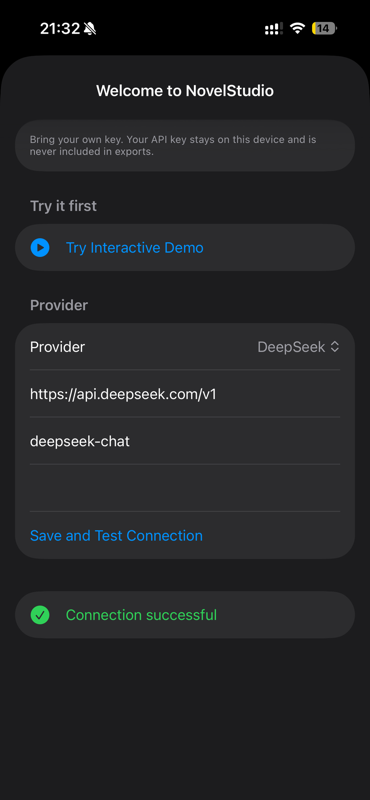

01体验演示Try it first先体验内置演示，再决定是否连接自己的 AI 服务。Try the demo, then decide whether to connect an AI service.

体验演示与连接服务Try and connect无需配置即可进入演示。准备开始自己的对话时，再按提示连接 AI 服务。Start with the demo. Connect an AI service when ready to begin your own conversation.